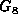

Data Structures and Algorithms
with Object-Oriented Design Patterns in Java
Data Structures and Algorithms
with Object-Oriented Design Patterns in Java
Definition (Connectedness of an Undirected Graph) An undirected graphis connected if there is a path in G between every pair of vertices in
.
Consider the undirected graph shown in Figure  .
It is tempting to interpret this figure as a picture of two graphs.
However, the figure actually represents
the undirected graph , given by
.
It is tempting to interpret this figure as a picture of two graphs.
However, the figure actually represents
the undirected graph , given by
Clearly, the graph  is not connected. For example, there is no path between vertices a and d. In fact, the graph consists of two, unconnected parts, each of which is a connected sub-graph. The connected sub-graphs of a graph are called connected components .
Figure: An unconnected, undirected graph with two (connected) components.
A traversal of an undirected graph (either depth-first or breadth-first) starting from any vertex will only visit all the other vertices of the graph if that graph is connected. Therefore, there is a very simply way to test whether an undirected graph is connected: Count the number of vertices visited during a traversal of the graph. Only if all the vertices are visited is the graph connected.
Program shows how this can be implemented.
The isConnected method of the AbstractGraph class
is a boolean-valued method
that returns true if the graph is connected.
Program: AbstractGraph class isConnected method.
The method is implemented using a the depthFirstTraversal method and a visitor that simply counts the number of vertices it visits. The visit method adds one the value field of the counter each time it is called.
The worst-case running time of the isConnected method
is determined by the time taken by the depthFirstTraversal.
Clearly in this case  .
Therefore, the running time of isConnected is
.
Therefore, the running time of isConnected is
 when adjacency matrices are used to represent the graph
and
when adjacency matrices are used to represent the graph
and  when adjacency lists are used.
when adjacency lists are used.
 Copyright © 1998 by Bruno R. Preiss, P.Eng. All rights reserved.
Copyright © 1998 by Bruno R. Preiss, P.Eng. All rights reserved.